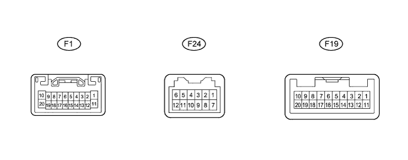
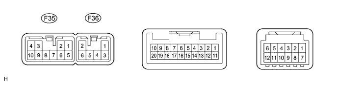
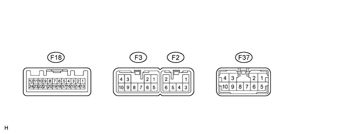

AUDIO AND VISUAL SYSTEM (w/o Multi-display) > TERMINALS OF ECU |
| CHECK RADIO RECEIVER (for Separate Type Amplifier System) |

Disconnect the F1 receiver connector.
Measure the resistance and voltage according to the value(s) in the table below.
| Terminal No. (Symbol) | Wiring Color | Terminal Description | Condition | Specification |
| F1-1 (B) - F1-20 (GND) | L - BR | Battery | Always | 11 to 14 V |
| F1-20 (GND) - Body ground | BR - Body ground | Ground | Always | Below 1 Ω |
| F1-11 (ACC) - F1-20 (GND) | GR - BR | Accessory (ON) | Engine switch off | Below 1 V |
| F1-11 (ACC) - F1-20 (GND) | GR - BR | Accessory (ON) | Engine switch on (ACC) | 11 to 14 V |
Reconnect the F1 receiver connector.
Measure the voltage according to the value(s) in the table below.
| Terminal No. (Symbol) | Wiring Color | Terminal Description | Condition | Specification |
| F1-2 (ILL+) - F1-20 (GND) | G - BR | Illumination signal | Engine switch on (IG), light control switch off | Below 1 V |
| F1-2 (ILL+) - F1-20 (GND) | G - BR | Illumination signal | Engine switch on (IG), light control switch tail or on | 11 to 14 V |
| F1-7 (MUTE) - F1-20 (GND) | B - BR | Mute signal | Audio system playing → changing modes | 3.5 V or higher → Below 1 V |
| F1-8 (R+) - F1-20 (GND) | B - BR | Sound signal (right) | Audio system playing | Waveform synchronized with sound is output |
| F1-9 (L+) - F1-20 (GND) | R - BR | Sound signal (left) | Audio system playing | Waveform synchronized with sound is output |
| F1-18 (R-) - F1-20 (GND) | W - BR | Sound signal (right) | Audio system playing | Waveform synchronized with sound is output |
| F1-19 (L-) - F1-20 (GND) | G - BR | Sound signal (left) | Audio system playing | Waveform synchronized with sound is output |
| F1-12 (ILL- ) - F1-20 ( GND) | W - BR | Illumination signal | Engine switch off | Below 1 V |
| F1-12 (ILL-) - F1-20 (GND) | W - BR | Illumination signal | Engine switch on (IG) | Pulse generation |
| F1-5 (ATX+) - F1-20 (GND) | R - BR | AVC-LAN communication signal | Engine switch on (ACC) | 2 to 3 V |
| F1-15 (ATX-) - F1-20 (GND) | W - BR | AVC-LAN communication signal | Engine switch on (ACC) | 2 to 3 V |
| F1-13 (ANT) - F1-20 (GND) | P - BR | Power source of antenna | Radio switch on and AM or FM | 11 to 14 V |
| F19-6 (SWG) - F1-20 (GND) | W - BR | Steering pad switch ground | Always | Below 1 V |
| F19-7 (SW1) - F1-20 (GND) | L - BR | Steering pad switch signal | Steering pad switch not pushed | 4 V or more |
| F19-7 (SW1) - F1-20 (GND) | L - BR | Steering pad switch signal | Steering pad switch seek+ switch pushed | Below 2.5 V |
| F19-7 (SW1) - F1-20 (GND) | L - BR | Steering pad switch signal | Steering pad switch seek- switch pushed | Below 0.9 V |
| F19-7 (SW1) - F1-20 (GND) | L - BR | Steering pad switch signal | Steering pad switch vol+ switch pushed | Below 1.5 V |
| F19-7 (SW1) - F1-20 (GND) | L - BR | Steering pad switch signal | Steering pad switch vol+ switch pushed | Below 0.9 V |
| F19-8 (SW2) - F1-20 (GND) | P - BR | Steering pad switch signal | Steering pad switch not pushed | 4 V or more |
| F19-8 (SW2) - F1-20 (GND) | P - BR | Steering pad switch signal | Steering pad switch MODE switch pushed | Below 2.5 V |
| F19-8 (SW2) - F1-20 (GND) | P - BR | Steering pad switch signal | Steering pad switch DISP switch pushed | Below 2.5 V |
| CHECK RADIO RECEIVER (for Built-in Type Amplifier System) |

Disconnect the F35 receiver connector.
Measure the resistance and voltage according to the value(s) in the table below.
| Terminal No. (Symbol) | Wiring Color | Terminal Description | Condition | Specification |
| F35-4 (B) - F35-7 (GND) | L - BR | Battery | Always | 11 to 14 V |
| F35-7 (GND) - Body ground | BR - Body ground | Ground | Always | Below 1 Ω |
| F35-3 (ACC) - F35-7 (GND) | GR - BR | Accessory (ON) | Engine switch off | Below 1 V |
| F35-3 (ACC) - F35-7 (GND) | GR - BR | Accessory (ON) | Engine switch on (ACC) | 11 to 14 V |
Reconnect the F35 receiver connector.
Measure the voltage according to the value(s) in the table below.
| Terminal No. (Symbol) | Wiring Color | Terminal Description | Condition | Specification |
| F35-10 (ILL+) - F35-7 (GND) | G - BR | Illumination signal | Engine switch on (IG), light control switch off | Below 1 V |
| F35-10 (ILL+) - F35-7 (GND) | G - BR | Illumination signal | Engine switch on (IG), light control switch tail or on | 11 to 14 V |
| F35-1 (FR+) - F35-7 (GND) | W - BR | Sound signal (Front right) | Audio system playing | Waveform synchronized with sound is output |
| F35-2 (FL+) - F35-7 (GND) | W - BR | Sound signal (Front left) | Audio system playing | Waveform synchronized with sound is output |
| F35-5 (FR-) - F35-7 (GND) | B - BR | Sound signal (Front right) | Audio system playing | Waveform synchronized with sound is output |
| F35-6 (FL-) - F35-7 (GND) | B - BR | Sound signal (Front left) | Audio system playing | Waveform synchronized with sound is output |
| F35-8 (ANT) - F35-7 (GND) | P - BR | Power source of antenna | Radio switch is on and AM or FM | 11 to 14 V |
| F36-1 (RR+) - F35-7 (GND) | R - BR | Sound signal (Rear right) | Audio system playing | Waveform synchronized with sound is output |
| F36-2 (RL+) - F35-7 (GND) | B - BR | Sound signal (Rear left) | Audio system playing | Waveform synchronized with sound is output |
| F36-3 (RR-) - F35-7 (GND) | W - BR | Sound signal (Rear right) | Audio system playing | Waveform synchronized with sound is output |
| F36-6 (RL-) - F35-7 (GND) | Y - BR | Sound signal (Rear left) | Audio system playing | Waveform synchronized with sound is output |
| CHECK STEREO COMPONENT AMPLIFIER |

Disconnect the F18 and F2 amplifier connectors.
Measure the resistance and voltage according to the value(s) in the table below.
| Terminal No. (Symbol) | Wiring Color | Terminal Description | Condition | Specified Condition |
| F2-2 (GND) - Body ground | W-B - Body ground | Ground | Always | Below 1 Ω |
| F2-6 (GND2) - Body ground | W-B - Body ground | Ground | Always | Below 1 Ω |
| F2-1 (+B) - F2-2 (GND) | L - W-B | Battery | Always | 11 to 14 V |
| F18-12 (ACC) - F2-2 (GND) | GR - W-B | Accessory (ON) | Engine switch off | Below 1 V |
| F18-12 (ACC) - F2-2 (GND) | GR - W-B | Accessory (ON) | Engine switch on (ACC) | 11 to 14 V |
Reconnect the F18 and F2 amplifier connectors.
Measure the voltage according to the value(s) in the table below.
| Terminal No. (Symbol) | Wiring Color | Terminal Description | Condition | Specified Condition |
| F3-3 (CTR+) - F2-2 (GND) | W - W-B | Sound signal | Audio system playing | Waveform synchronized with sound is output |
| F3-9 (CTR-) - F2-2 (GND) | B - W-B | Sound signal | Audio system playing | Waveform synchronized with sound is output |
| F37-2 (FL+) - F2-2 (GND) | W - W-B | Sound signal | Audio system playing | Waveform synchronized with sound is output |
| F37-6 (FL-) - F2-2 (GND) | B - W-B | Sound signal | Audio system playing | Waveform synchronized with sound is output |
| F37-8 (FR+) - F2-2 (GND) | W - W-B | Sound signal | Audio system playing | Waveform synchronized with sound is output |
| F37-7 (FR-) - F2-2 (GND) | B - W-B | Sound signal | Audio system playing | Waveform synchronized with sound is output |
| F18-3 (L+) - F2-2 (GND) | R - W-B | Sound signal | Audio system playing | Waveform synchronized with sound is output |
| F18-2 (L-) - F2-2 (GND) | G - W-B | Sound signal | Audio system playing | Waveform synchronized with sound is output |
| F18-5 (R+) - F2-2 (GND) | B - W-B | Sound signal | Audio system playing | Waveform synchronized with sound is output |
| F18-4 (R-) - F2-2 (GND) | W - W-B | Sound signal | Audio system playing | Waveform synchronized with sound is output |
| F18-11 (SPD) - F2-2 (GND) | V - W-B | Speed signal | Engine switch on (IG), drive wheels are turned slowly | Pulse generation |
| F18-1 (MUTE) - F2-2 (GND) | B - W-B | Mute signal | Audio system playing → changing modes | 3.5 V or higher → Below 1 V |
| F18-8 (TX+) - F2-2 (GND) | R - W-B | AVC-LAN communication signal | Engine switch on (ACC) | 2 to 3 V |
| F18-7 (TX-) - F2-2 (GND) | W - W-B | AVC-LAN communication signal | Engine switch on (ACC) | 2 to 3 V |
| F18-5 (R+) - F2-2 (GND) | B - W-B | Sound signal (right) | Audio system playing | Waveform synchronized with sound is output |
| F18-4 (R-) - F2-2 (GND) | W - W-B | Sound signal (right) | Audio system playing | Waveform synchronized with sound is output |
| F18-3 (L+) - F2-2 (GND) | R - W-B | Sound signal (left) | Audio system playing | Waveform synchronized with sound is output |
| F18-2 (L-) - F2-2 (GND) | G - W-B | Sound signal (left) | Audio system playing | Waveform synchronized with sound is output |
| F37-3 (RL+) - F2-2 (GND) | B - W-B | Sound signal (left) | Audio system playing | Waveform synchronized with sound is output |
| F37-9 (RL-) - F2-2 (GND) | Y - W-B | Sound signal (left) | Audio system playing | Waveform synchronized with sound is output |
| F37-4 (RR+) - F2-2 (GND) | R - W-B | Sound signal (right) | Audio system playing | Waveform synchronized with sound is output |
| F37-10 (RR-) - F2-2 (GND) | W - W-B | Sound signal (right) | Audio system playing | Waveform synchronized with sound is output |
| F3-4 (WFL+) - F2-2 (GND) | P - W-B | Sound signal | Audio system playing | Waveform synchronized with sound is output |
| F3-10 (WFL-) - F2-2 (GND) | V - W-B | Sound signal | Audio system playing | Waveform synchronized with sound is output |
| F37-1 (WFR+) - F2-2 (GND) | LG - W-B | Sound signal | Audio system playing | Waveform synchronized with sound is output |
| F37-5 (WFR-) - F2-2 (GND) | L - W-B | Sound signal | Audio system playing | Waveform synchronized with sound is output |